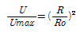
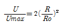
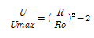
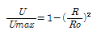
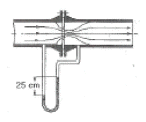
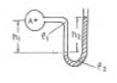
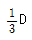
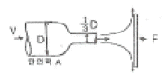
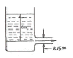

소방설비기사(기계분야) (2008-03-02 기출문제)
1과목: 소방원론
1. 다음 연소에 관한 설명 중 틀린 것은?
- 알코올은 증발연소를 한다.
- 목재, 석탄은 분해연소를 한다.
- 고체의 표면에서 연소가 일어나는 경우 표면연소라 한다.
- 나트륨, 유황의 연소형태는 자기연소 이다.
(정답률: 55%)

2. 일반적으로 공기 중 산소농도를 몇 vol% 이하로 감소시키면 연소상태의 중지 및 질식소화가 가능하겠는가?
- 15
- 21
- 25
- 31
(정답률: 64%)
3. 소화 방법 중 제거소화에 해당되지 않는 것은?
- 산불이 발생하면 화재의 진행방향을 앞질러 벌목함
- 방안에서 화재가 발생하면 이불이나 담요로 덮음
- 가스 화재시 밸브를 잠궈 가스흐름을 차단함
- 불타고 있는 장작더미 속에서 아직 타지 않은 것을 안전한 곳으로 운반
(정답률: 73%)
4. 다음 중 화재하중을 나타내는 단위는?
- kcal/kg
- ℃/m2
- kg/m2
- kg/kcal
(정답률: 50%)
5. 일반적인 자연발화의 방지법이 아닌 것은?
- 습도를 높일 것
- 통풍을 원활하게 하여 열축적을 방지할 것
- 저장실의 온도를 낮출 것
- 발열반응에 정촉매 작용을 하는 물질을 피할 것
(정답률: 71%)
6. 화재발생시 소화적업에 주로 물을 이용한다. 물을 이용하는 주된 목적은 무엇 때문인가?
- 가연물질을 제거하기 위해서
- 물의 증발잠열을 이용하기 위해서
- 상대적으로 물의 비중이 작기 때문에
- 물의 헌열을 이용하기 위해서
(정답률: 66%)
7. 전기화재의 원인으로 가장 관계가 없는 것은?
- 단락
- 과전류
- 누전
- 절연 과다
(정답률: 64%)
8. 갑작스런 화재 발생시 인간의 피난 특성으로 틀린 것은?
- 본능적으로 평상시 사용하는 출입구를 사용한다.
- 최초로 행동을 개시한 사람을 따라서 움직인다.
- 공포감으로 인해서 빛을 피하여 어두운 곳으로 몸을 숨긴다.
- 무의식 중에 발화 장소의 반대쪽으로 이동한다.
(정답률: 74%)
9. 건축물에 화재가 발생하여 일정 시간이 경과하게 되면 일정 공간 안에 열과 가연성가스가 축적되고 한 순간에 폭발적으로 화재가 확산되는 현상을 무엇이라 하는가?
- 보일오버현상
- 플래쉬오버현상
- 패닉현상
- 리프팅현상
(정답률: 61%)
10. 인화점이 낮은 것부터 높은 순서로 옳게 나열된 것은?
- 아세톤 < 이황화탄소 < 에틸알콜
- 이황화탄소 < 에틸알콜 < 아세톤
- 에틸알콜 < 아세톤 < 이황화탄소
- 이황화탄소 < 아세톤 < 에틸알콜
(정답률: 64%)
11. 가연물에 대한 일반적인 설명으로 옳은 것은?
- 산소와 반응시 흡열반응을 하는 것은 가연물이 될 수 없다.
- 구성원소 중 산소가 포함된 유기물은 가연물이 될 수 없다.
- 활성화 에너지가 클수록 가연물이 되기 쉽다.
- 산소와의 친화력이 작을수록 가연물이 되기 쉽다.
(정답률: 37%)
12. 이산화탄소소화설비의 적용대상으로 적당하지 않은 것은?
- 가솔린
- 전기설비
- 인화성 고체 위험물
- 니트로셀룰로오스
(정답률: 55%)
13. 위험물의 혼재의 기준에서 혼재가 가능한 위험물로 짝지어진 것은? (단, 위험물은 지정수량의 10배를 가정한다.)
- 질산칼륨과 가솔린
- 과산화수소와 황린
- 철분과 유기과산화물
- 등유와 과염소산
(정답률: 64%)
14. 물과 반응하여 위험성이 높아지는 물질이 아닌 것은?
- 칼륨
- 니트로셀룰로오스
- 나트륨
- 수소화리튬
(정답률: 55%)
15. 건축물의 주요구조부가 아닌 것은?
- 차양
- 보
- 기둥
- 바닥
(정답률: 66%)
16. 이산화탄소나 질소의 농도가 높아지면 연소속도에 어떠한 영향을 미치는가?
- 연소속도가 빨라진다.
- 연소속도가 느려진다.
- 연소속도에 변화가 없다.
- 처음에는 느려지나 나중에는 빨라진다.
(정답률: 41%)
17. 방화구조에 대한 기준으로 틀린 것은?
- 철망모르타르로서 그 바름두께가 2cm 이상인 것
- 두께 1.2cm 이상의 석고판 위에 석면 시멘트판을 붙인 것
- 두께 2cm 이상의 암면 보온판 위에 석면 시멘트판을 붙인 것
- 심벽에 흙으로 맞벽치기 한 것
(정답률: 18%)
18. 산소를 함유하고 있어 공기 중의 산소가 없어도 자기연소가 가능한 것은?
- 이황화탄소
- 톨루엔
- 크실렌
- 디니트로톨루엔
(정답률: 48%)
19. 에틸렌의 연소 생성물에 속하지 않는 것은? (단, 에틸렌의 일부는 불완전 연소된다고 가정한다.)
- 이산화탄소
- 일산화탄소
- 수증기
- 염화수소
(정답률: 42%)
20. 다음 중 연소를 위한 필수조건이 아닌 것은?
- 가연물
- 산소
- 점화에너지
- 부촉매
(정답률: 66%)
2과목: 소방유체역학
21. 반지름 인 원형파이프에 유체가 층류로 흐를 때, 중심으로부터 거리 R에서의 유속 U와 최대속도 Umax의 비에 대한 분포식으로 옳은 것은?




(정답률: 43%)
22. 압력이 1.38MPa, 온도가 38℃인 공기의 밀도는 약 몇 인가? (단, 일반기체상수는 8.314 KJ/kmo l. K, 공기의 분자량은 28.97 이다.)
- 14.2
- 15.5
- 16.8
- 18.1
(정답률: 37%)
23. 웨버수(Weber number)의 물리적 의미는?
- 관성력/압력
- 관성력/점성력
- 관성력/표면장력
- 관성력/탄성력
(정답률: 32%)
24. 펌프의 상사설을 유지하면서 회전수는 변함없이 직경을 두 배로 증가시킬 때의 설명으로 틀린 것은?
- 유량은 8배로 증가한다.
- 수두는 4배로 증가한다.
- 동력은 16배로 증가한다.
- 효율은 변함없다.
(정답률: 33%)
25. 다음 분말 소화약제 중에서 ABC급 화재에 적응성이 있는 소화약제의 종류는?
- NH4 H2 PO4
- NaHCO3
- Na2 CO3
- KHCO3
(정답률: 65%)
26. 용기속의 물에 압력을 가했더니 물의 체적이 0.5% 감소하였다. 이 때 가해진 압력은 몇 Pa인가? (단, 물의 압축률은 5×10-10[1/Pa]이다.)
- 107
- 2×107
- 109
- 2×109
(정답률: 34%)
27. 관 마찰계수가 일정할 때 배관 속을 흐르는 유체의 손실 수두에 관한 설명으로 옳은 것은?
- 관 길이에 반비례한다.
- 관 내경의 제곱에 반비례한다.
- 유속의 제곱에 비례한다.
- 유체의 밀도에 반비례한다.
(정답률: 53%)
28. 단위 길이당 밀도와 단면적 증가율이 각각 0.5%, 0.7%인 노즐 내 정상유동에서 단위 길이당 속도 증가율은?
- -1.2%
- -0.2%
- -0.7%
- +0.2%
(정답률: 15%)
29. 그림과 같이 지름 25cm인 수평관에 12cm의 오리피스가 설치되어 있으며, 물ㆍ수은 액주계가 오리피스판 양쪽에 연결되어 있다. 액주계의 높이 차이가 25cm 일 때 유량은 몇 인가? (단, 수은의 비중은 13.6, 수축계수는 0.7, 속도계수(Cv)는 0.9 이다.)

- 0.092
- 0.108
- 0.088
- 0.061
(정답률: 21%)
30. 용량이 500W인 전열기로 2 kg의 물을 10℃에서 100℃까지 가열하는 경우 전열기의 발생열 중 45%가 유효하게 이용된다면 가열에 필요한 시간은 몇 분인가? (단, 물의 평균비열은 4.18 kJ/kg.K 이다.)
- 57.2
- 55.7
- 53.1
- 51.2
(정답률: 30%)
31. 다음 중 폴리트로픽 지수(n)가 1인 과정은?
- 단열과정
- 정압과정
- 등온과정
- 정적과정
(정답률: 35%)
32. 분말소화약제인 탄산수소나트륨(NaHCO3)이 열과 반응하여 생기는 가스는?
- 일산화탄소
- 이산화탄소
- 삼산화탄소
- 질소
(정답률: 61%)
33. 그림의 액주계에서 밀도 p1 =1 000kg/m3 , p2 = 1360kg/m3 높이, h1 = 500mm, h2 = 800mm 일 때 관 중심 A의 계기압력은 몇 kPa 인가?

- 101.7
- 109.6
- 126.4
- 131.7
(정답률: 18%)
34. 그림과 같이 단면적이 A인 원형관으로 밀도가 ρ인 비압축성 유체가 V의 유속으로 들어와 직경이

인 원형노즐로 분출되고 있다. 제트에 위해서 평판에 작용하는 힘은?
- ρV2A
- 3ρV2A
- 9ρV2A
- 27ρV2A
(정답률: 29%)
35. 물의 성질에 대한 설명으로 틀린 것은?
- 0℃의 얼음 1g이 0℃의 액체 물로 변하는데 필요한 용융열은 약 80cal/g 이다.
- 20℃의 물 1g을 100℃까지 가열하는데 60cal의 열이 필요하다.
- 100℃의 액체 물 1g을 100℃의 수증기로 만드는데 필요한 증발잠열은 약 539cal/g 이다.
- 대기압하에서 100℃의 물이 액체에서 수증기로 바뀌면 체적은 1600배 정도 증가한다.
(정답률: 44%)
36. 소방설비에 사용되는 CO2에 대해 틀린 설명은?
- 용기 내에 기상으로 가압되어 저장되고 있다.
- 상온, 상압에서는 기체 상태로 존재한다.
- 용기로부터 방출되어 배관 내에 흐를 때 일부 액상이 되는 경우도 있다.
- 무색, 무취이며 전기적으로 비전도성이고 공기보다 무겁다.
(정답률: 47%)
37. 수격작용을 방지하는 대책으로 관계가 없는 것은?
- 유량을 증가시킨다.
- 밸브 개폐 속도를 낮춘다.
- 펌프의 회전수를 일정하게 조절한다.
- 서지 탱크를 관로에 설치한다.
(정답률: 66%)
38. 열복사 현상에 대한 이론적인 설명과 거리가 먼 것은?
- Fourier 의 법칙
- Kirchhoff 의 법칙
- Stefan-Boltzmann 의 법칙
- Planck 의 법칙
(정답률: 28%)
39. 그림과 같은 물 탱크에 수명으로부터 6m되는 지점에 직경 15cm가 되는 노즐이 있을 경우 유출하는 유량은 몇 인가? (단, 손실은 무시한다.)

- 0.191
- 0.591
- 0.766
- 10.8
(정답률: 49%)
40. 배관에서 유량 및 유속이 일반적인 측정법이 아닌 것은?
- 벤츄리관에 의한 방법
- 위어에 의한 방법
- 피토관에 의한 방법
- 오리피스에 의한 방법
(정답률: 44%)
3과목: 소방관계법규
41. 다음 중 소방시설공사의 하자보수 보증에 대한 사항으로 맞지 않은 것은?
- 스프링클러설비, 자동화재탐지설비의 하자보수 보증기간은 3년이다.
- 계약금액이 300만원 이상인 소방시설 등의 공사를 하는 경우 하자 보수의 이행을 보증하는 증서를 예치 하여야 한다.
- 금융기관에 예치하는 하자보수보증금은 소방시설공사금액의 100분의 3이상으로 한다.
- 관계인으로부터 소발시설의 하자발생을 통보받은 공사업자는 3일 이내에 이를 보수하거나 보수 일정을 기록한 하자보수계획을 관계인에게 서면으로 알려야 한다.
(정답률: 33%)
42. 다음 중 소방활동에 필요한 소화전ㆍ급수탑ㆍ저수조를 설치하고 유지ㆍ관리하여야 하는 자로 알맞은 것은? (단, 수도법에 따라 설치되는 소화전은 제외한다.)
- 소방파출소장
- 소방서장
- 소방본부장
- 시ㆍ도지사
(정답률: 60%)
43. 특정소방대상물로 위락시설에 해당되지 않는 것은?
- 투전기업소
- 카지노업소
- 모도장
- 공연장
(정답률: 47%)
44. 다음 중 소방공사감리업자의 업무로 거리가 먼 것은?
- 당해 공사업기술인력의 적법성 검토
- 피난ㆍ방화시설의 적법성 검토
- 실내장식물의 불연화 및 방염물품의 적법성 검토
- 소방시설 등 설계변경 사항의 적합성 검토
(정답률: 39%)
45. 항공기격납고는 특정소방대상물 중 어느 시설에 해당하는가?
- 위험물저장 및 처리시설
- 운수자동차관련시설
- 창고시설
- 업무시설
(정답률: 58%)
46. 산화성 고체이며 제1류 위험물에 해당하는 것은?
- 황화린
- 칼륨
- 유기과산화물
- 염소산염류
(정답률: 64%)
47. 위험물시설의 설치 밀 변경, 안전관리에 대한 설명으로 옳지 않은 것은?
- 제조소등의 설치자의 지우를 승계한 자는 승계한 날로부터 30일 이내에 시ㆍ도지사에게 신고하여야 한다.
- 제조소 등의 용도를 폐지한 때에는 폐지한 날부터 30일 이내에 시ㆍ도지사에게 신고하여야 한다.
- 위험물안전관리자가 퇴직한 때에는 퇴직한 날부터 30일 이내에 다시 위험물 안전 관리자를 선임하여야 한다.
- 위험물안전관리자를 선임한 때에는 선임한 날부터 14일 이내에 소방본부장 또는 소방서장에게 신고하여야 한다.
(정답률: 53%)
48. 저장소 또는 제조소 등이 아닌 장소에서 지정수량이상의 위험물을 저장 또는 취급한 자에 대한 벌칙은?(관련 규정 개정전 문제로 기존 정답은 1번입니다. 여기서는 1번을 누르면 정답 처리 됩니다. 자세한 내용은 해설을 참고하세요.)
- 1년 이하 징역 또는 1천만원 이하의 벌금
- 2년 이하 징역 또는 1천만원 이하의 벌금
- 1년 이하 징역 또는 2천만원 이하의 벌금
- 2년 이하 징역 또는 2천만원 이하의 벌금
(정답률: 55%)
49. 함부로 버려두거나 그냥 둔 위험물의 소유자ㆍ관리자 또는 점유자의 주소와 성명을 알 수 없어 필요한 명령을 할 수 없는 때에 소방본부장 또는 소방서장이 취하는 조치로 옳지 않은 것은?
- 소속공무원으로 하여금 그 위험물을 옮기거나 치우게 할 수 있다.
- 옮기거나 치운 위험물을 보관하여야 한다.
- 위험물을 보관하는 경우에는 그 날부터 7일 동안 소방본부 또는 소방서의 게시판에 이를 공고하여야 한다.
- 보관기간이 종료된 위험물이 부패. 파손 또는 이와 유사한 사유로 소정의 용도에 계속 사용할 수 없는 경우에는 폐기할 수 있다.
(정답률: 52%)
50. 산업안전기사 또는 상업안전산업기사 자격을 가진자로서 몇 년 이상 방화관리에 관한 실무경력 있는 경우 1급 방화관리대상물의 방화관리자로 선임할 수 있는가?
- 1년 이상
- 1년 6개월 이상
- 2년 이상
- 3년 이상
(정답률: 43%)
51. 구조대원은 소방공무원으로서 소방방재청장ㆍ소방본부장 또는 소방서장이 임명한다. 다음 중 구조대원이 자격으로 적합하지 않은 자는?
- 행정자치부령이 정하는 구조업무에 관한 교육을 받은 자
- 소방방재청장이 실시하는 인명구조사 교육을 수료하고 교육수료시험에 합격한 자
- 국가ㆍ지방자치단체ㆍ공공기관에서 구조관련 분야의 근무경력이 1년 이상인 자
- 응급의료에 관한 법률 제36조의 규정에 의하여 응급 구조사의 자격을 취득한 자
(정답률: 43%)
52. 소방시설 등의 자체점검과 관련하여 작동기능점검결과의 자체보관 기간과 종합정밀점검 결과의 제출기간이 올바른 것은?
- 자체보관 1년, 제출기간 30일 이내
- 자체보관 2년, 제출기간 30일 이내
- 자체보관 3년, 제출기간 15일 이내
- 자체보관 3년, 제출기간 30일 이내
(정답률: 56%)
53. 소방시설의 종류와 대한 설명으로 옳은 것은?
- 소화기구, 옥외소화전설비는 소화설비에 해당된다.
- 유도등, 비상조명등은 경보설비에 해당된다.
- 소화수조, 저수조는 소화활동설비에 해당된다.
- 연결송수관설비는 소화용수설비에 해당된다.
(정답률: 52%)
54. 다량의 위험물을 저장ㆍ취급하는 제조소등으로서 대통령령이 정하는 제조소등이 있는 동일한 사업소에서 대통령령이 정하는 수량 이상의 위험물을 저장 또는 취급하는 경우 당해 사업소에 자체소방대를 설치하여야 한다. 여기서 “대통령령이 정하는 수량”이라 함은 지정수량의 몇 배를 말하는가?
- 2천배
- 3천배
- 4천배
- 5천배
(정답률: 41%)
55. 다음 중 화재 예방상 필요하다고 인정되거나 화재 위험경보시 발령하는 소방신호의 종류로 맞는 것은?
- 경계신호
- 발화신호
- 경보신호
- 훈련신호
(정답률: 46%)
56. 방염대상물품에 대하여 방염처리를 하고자 하는 자는 어떤 절차를 거쳐야 하는가?
- 시ㆍ도지사에게 방염처리업의 등록
- 시ㆍ도지사에게 방염처리업의 허가
- 소방서장에게 방염처리업의 등록
- 소방서장에게 방염처리업의 허가
(정답률: 41%)
57. 다음 중 화재경계지구이 지정대상지역과 가장 거리가 먼 것은?
- 목조건물이 밀집한 지역
- 시장지역
- 소방용수시설이 없는 지역
- 공장지역
(정답률: 32%)
58. 다음 중 화재조사전담부서의 설치. 운영 등에 관련된 사항으로 바르지 못한 것은?
- 화재조사 전담부서에는 발굴용수, 기록용기가, 감식용기기, 조명기기, 그 밖의 장비를 갖추어야 한다.
- 화재조사에 관한 시험에 합격한 자에게 1년마다 전문보수 교육을 실시하여야 한다.
- 화재의 원인과 피해조사를 위하여 소방방재청, 시ㆍ도의 소방본부와 소방서에 화재조사를 전담하는 부서를 설치ㆍ운영한다.
- 화재조사는 소화활동과 동시에 실시되어야 한다.
(정답률: 43%)
59. 소방대상물에 대한 개수(改修)명령권자는?
- 시ㆍ도지사
- 소방본부장 또는 소방서장
- 군수ㆍ구청장
- 소방시설관리사
(정답률: 54%)
60. 다음 중 건축허가등의 동의대상물의 범위에 속하지 않는 것은?
- 관망탑
- 방송용 송ㆍ수신탑
- 항공기격납고
- 철탑
(정답률: 38%)
4과목: 소방기계시설의 구조 및 원리
61. 소화용수설비의 설치기준 중 맞지 않는 것은?
- 채수구는 지표면으로부터 높이가 0.8m 이상 1.0m ㅇ하의 위치에 설치한다.
- 유량 0.8분 이상인 유수를 사용 할 수 있는 경우에는 소화수조를 설치하지 않을 수 있다.
- 소화수조 또는 저수조가 지표면으로부터 깊이가 4.5m 이상인 경우 가압송수장치를 설치한다.
- 흡수관 투입구는 직경이 0.6m 이상으로 하여야 한다.
(정답률: 54%)
62. 건식 연결송수관설비의 송수구 부근에 설치하는 기기 순서로 맞는 것은?
- 송수구 → 자동배수밸브 → 체크밸브 → 자동배수밸브
- 송수구 → 체크밸브 → 자동배수밸브 → 체크밸브
- 송수구 → 자동배수밸브 → 체크밸브
- 송수구 → 체크밸브 → 자동배수밸브
(정답률: 50%)
63. 스모크 타워식 자연배연방식에 관한 설명 중 옳지 않은 것은?
- 배연 샤프트의 굴뚝효과를 이용한다.
- 고층 빌딩에 적당하다.
- 배연기를 사용하는 기계배연의 일종이다.
- 모든 층의 일반 거실 화재에 이용할 수 있다.
(정답률: 55%)
64. 항공기 격납고에 적응하는 고정식 포소화설비로서 가장 적당한 것은?
- 포워터스프링클러설비
- 스프링클러설비
- 포워터스프레이설비
- 드렌쳐설비
(정답률: 49%)
65. 연결상수설비의 배관시공에 관한 설명 중 옳지 않은 것은?
- 개방형 헤드를 사용하는 연결살수설비에 있어서의 수평주행배관은 헤드를 향하여 상향으로 100분의 1 이상의 기울기로 설치한다.
- 가지배관 또는 교채배관을 설치하는 경우에는 가지배관의 배열은 토너먼트 방식이어야 한다.
- 가지배관은 교차배관 또는 주배관에서 분기되는 지점을 기점으로 한쪽 가지배관에 설치되는 헤드의 개수는 8개 이하로 하여야 한다.
- 배관은 배관용탄소강관 또는 압력배관용탄소강관이나 이와 동등 이상의 강도ㆍ내식성 및 내열성을 가진 것으로 하여야 한다
(정답률: 43%)
66. 펌프 본체 중의 액체가 외부로 누설되는 것을 방지하기 위한 장치와 관계없는 것은?
- 글랜드패킹 방식
- 메케니칼식 방식
- 오일실 방식
- 다이아프램 방식
(정답률: 58%)
67. 분말소화설비의 저장용기 내부압력이 설정압력이 될 때 주 밸브를 새장하는 것은?
- 한시계전기
- 지기압력계
- 압력조정기
- 정압작동장치
(정답률: 50%)
68. 차고 또는 주차장에 설치하는 물분무 소화설비의 배수설비에 대한 설명이다. 옳지 않은 것은?
- 높이 5cm 이상의 경계턱으로 배수설비를 설치하여야 한다.
- 길이 40cm 이하마다 기름분리장치를 설치하여야 한다.
- 차량이 주차하는 바닥은 배수구 쪽으로 2/100의 기울기를 유지하여야 한다.
- 배수설비는 가아봉수장치의 최대송수능력의 수량을 유효하게 배수할 수 있는 크기 및 기울기로 하여야 한다.
(정답률: 49%)
69. 이산화탄소 소화약제의 저장용기에 관한 설치기중 설명 중 틀린 것은?
- 저장용기의 충전비는 고압식과 저압식 모두 1.1 이상 1.4 이하로 해야 한다.
- 저압식 저장용기에는 내압시험압력의 0.6배 내지 0.8배의 압력에서 작동하는 안전밸브를 설치해야 한다.
- 저압식 저장용기에는 액면계 및 압력계와 2.3MPa 이상 1.9MPa 이하의 압력에서 작동하는 압력경보장치를 설치해야 한다.
- 저장용기는 고압식은 25MPa 이상, 저압식은 3.5MPa 이상의 내압 시험압력에 합격한 것을 사욯해야 한다.
(정답률: 60%)
70. 옥외소화전설비의 설명 중 틀린 것은?
- 옥외소화전설비의 수원은 옥외소화전의 설치개수(2개 이상인 경우이 2개)에 3.5m3 를 곱한 양 이상이 되도록 한다.
- 노즐선단의 방수압은 0.25MPa 이상
- 호스 접결구는 각 소방대상물로부터 하나의 호스접결구까지 수평거리 40m 이하
- 호스는 구경 65mm 의 것으로 하여야 함
(정답률: 44%)
71. 소화용수설비에서 소방펌프차가 채수구로부터 어느 거리이내 까지 접근할 수 있도록 설치하여야 하는가?
- 5m 이내
- 3m 이내
- 2m 이내
- 1m 이내
(정답률: 47%)
72. 국소방출 방식의 할로겐화합물 소화설비의 분사헤드 설치 기준으로 옳은 것은?
- 소화약제의 방사에 의하여 가연물이 비산하는 장소에 설치할 것
- 할론 1301을 방사하는 분사헤드는 당해 소화약제가 무상으로 분무되는 것으로 할 것
- 분사헤드의 방사압력은 할론 2402를 방하사는 것에 있어서는 1cm2에 대하여 0.⑤MPa 이상이 되도록 할 것
- 기준 저장량의 소화약제를 10초 이내에 방사할 수 있는 것으로 할 것
(정답률: 28%)
73. 연결 송수관 설비에서 주 배관은 얼마의 구경으로 하여야 하는가?
- 65mm 이상
- 80mm 이상
- 90mm 이상
- 100mm 이상
(정답률: 65%)
74. 바닥면적이 1300m2인 판매시설에 소화기구를 설치하려 한다. 소화기구의 최소 능력단위는? (단, 주요구조부는 내화구조이고, 벽 및 반자의 실내와 면하는 부분이 불연재료이다.)
- 7단위
- 9단위
- 10단위
- 13단위
(정답률: 40%)
75. 2개의 방수구역으로서 하나의 제어밸브에 8개씩 드렌쳐헤드가 설치되어 있는 드렌처설비의 경우 법적인 수원의 수량은?
- 3.2m3 이상
- 6.4m3 이상
- 12.8m3 이상
- 10.6m3 이상
(정답률: 40%)
76. 스프링클러설비를 설치해야 할 소방대상물에 있어서 스프링클러 헤드를 설치하지 아니할 수 있는 장소 중 맞는 것은?
- 계단, 병실, 목욕실, 통신기기실, 아파트
- 발전실, 수수실, 응급처치실, 통신기기실
- 방전실, 변전실, 병실, 목욕실, 아파트
- 수술실, 병실, 변전실, 발전실, 아파트
(정답률: 73%)
77. 분말소화설비의 배관 청소용 가스는 어떻게 저장 유지 관리하여야 하는가?
- 축압용 가스용기에 가산 저장 유지
- 가압용 가스용기에 가산 저장 유지
- 별도 용기에 저장 유지
- 필요시에만 사용하므로 평소에 저장 불필요
(정답률: 77%)
78. 소화용수설비에 설치하는 소화구조는 소요수량이 80일 때 설치하는 흡수관 투입구 및 채수구의 수는?
- 흡수관투입구 → 1개 이상, 채수구 → 1개
- 흡수관투입구 → 1개 이상, 채수구 → 2개
- 흡수관투입구 → 2개 이상, 채수구 → 2개
- 흡수관투입구 → 2개 이상, 채수구 → 3개
(정답률: 46%)
79. 소화시설 설치에 관한 규정에 의하면 각 소방시설 또는 장치 등의 사용에 지장이 없는 경우 각각의 것을 합치거나 겸용하여 사용할 수 있다. 아래 사항 중 겸용에 관하여 규정되어 있지 않은 것은?
- 급수배관
- 수원
- 가압송수장치의 펌프
- 방수구
(정답률: 30%)
80. 다음 중 소화기이 설치 장소별 적응성에서 통신기기실에 적응성이 없는 수동식 소화기는?
- 이산화탄소 소화기
- 할로겐화합물 소화기(1301)
- 액체 소화기
- 청정소화약제 소화기
(정답률: 66%)